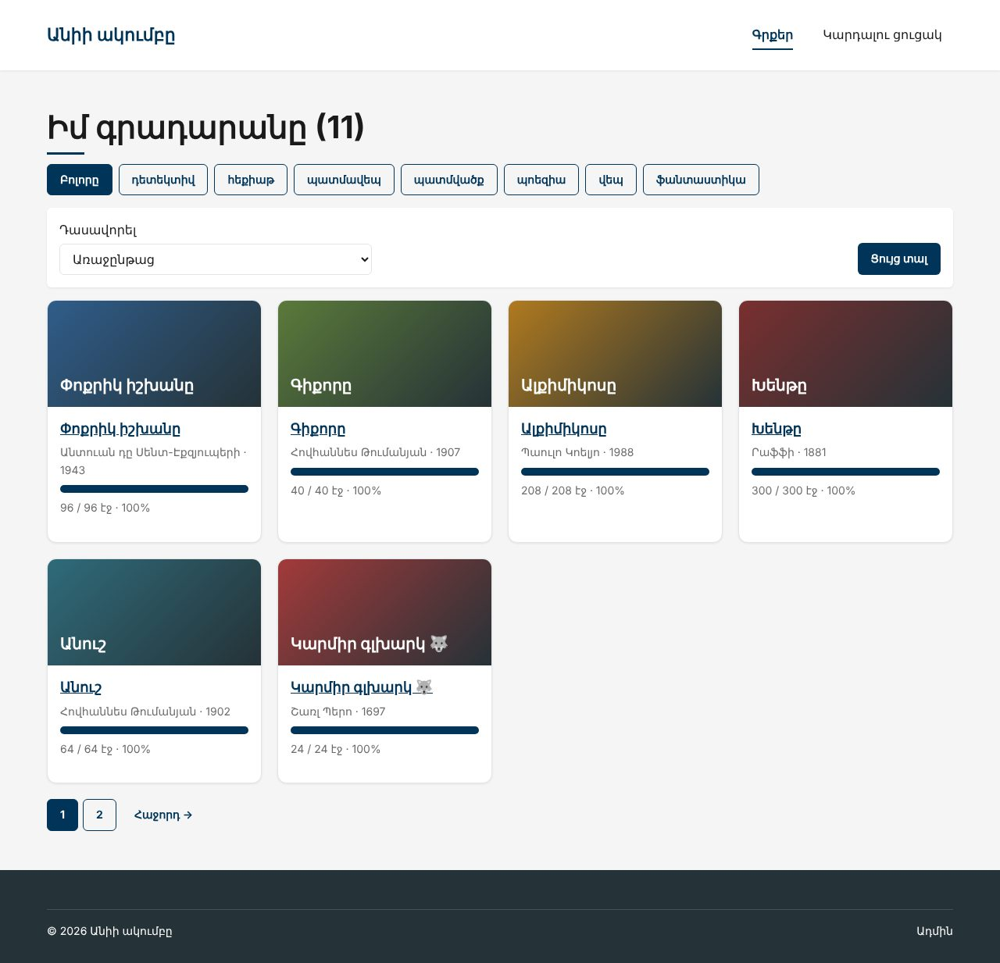
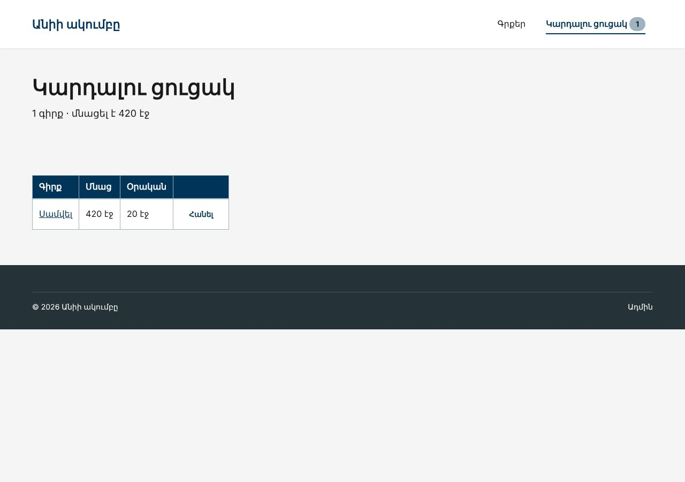

Տնային աշխատանք · PHP Դաս 19 · մինի-նախագիծ
Երեք շաբլոնը ստանում են մեկ layouts/app.blade.php, header-ը և footer-ը՝ partials։ Քարտը դառնում է <x-book-card>, flash-ը՝ <x-alert>։ Կարդալու ցուցակը՝ ReadingList ծառայություն և ListController, իսկ ադմինը՝ resource controller։
Դաս 01–19․ @extends, @section, @yield, @include, @push/@stack, կոմպոնենտներ (@props, $slot, $attributes), View::composer, autowiring, Route::resource, @csrf, @method, session(), back()->with()։ Eloquent՝ Դաս 20։


Laravel-ը ինքը չի մտնում օրինակի մեջ (vendor-ը 70+ ՄԲ է)․ example/-ում են միայն այն ֆայլերը, որ դու ստեղծում կամ փոխում ես նոր նախագծում։ Պատճենիր դրանք նույն ուղիներով։
Այս ֆայլերը պատճենվել են մաքուր Laravel 12 նախագծի վրա (Fortify-ով, MariaDB-ով), կատարվել են migrate:fresh --seed և view:cache, և կայքը ստուգվել է բրաուզերում ավտոմատ թեստերով (Դաս 22-ի վերջնական վիճակը՝ 50 ստուգում՝ ֆիլտրեր, ցուցակ, ադմին, վալիդացիա, դերեր, 403/404/419, API, գնահատական)։ Նկարները վերցված են հենց այդ գործարկումից։ Քո մեքենայում միևնույն է անցիր ստուգաթերթով (բաժին 03)։
Շարունակիր Laravel նախագիծը։ Եթե բաց ես թողել նախորդ դասը, սկսիր Դաս 18-ի օրինակից՝ պատճենելով ֆայլերը նոր Laravel նախագծի վրա։
starter/SETUP.md — այս դասի հրամանները| Գործարկել |
|---|
php artisan serve |
layouts/app.blade.php՝ @yield('title'), @yield('content'), @stack('scripts')partials/header և footer@extends-ովphp artisan make:component BookCard --view՝ @props(['book', 'inList' => false])<x-alert type="success">՝ $slot-ով, փոխարինում է layout-ի flash-ին (տնային 3)@props(['type' => 'success'])
<div class="row">
<div class="col w-100">
<div {{ $attributes->class(['alert', 'alert--' . $type, 'mt-20']) }} role="{{ $type === 'danger' ? 'alert' : 'status' }}">
{{ $slot }}
</div>
</div>
</div>app/Services/ReadingList.php՝ session(), առանց &$this->app->scoped(ReadingList::class)View::composer('partials.header', ...)՝ $listCountpublic function boot(): void
{
// Մեր էջավորման շաբլոնը՝ main.css-ի .pager դասերով, ոչ Tailwind (տնային 4)
Paginator::defaultView('pagination::default');
// Header-ին պետք է ամեն էջում։ composer-ը հաշվում է ՑՈՒՑԱԴՐՄԱՆ պահին,
// իսկ View::share()-ը՝ boot-ում, երբ դեռ հայտնի չէ, թե ինչ կավելացվի (դասարանական, փորձ 2)
View::composer('partials.header', function (\Illuminate\View\View $view) {
$view->with('listCount', app(ReadingList::class)->count());
});
}POST /list/items և DELETE /list/items/{id}list/index.blade.php՝ աղյուսակ, «Հանել»՝ @method('DELETE') (տնային 2)public/js/list.js՝ X-CSRF-TOKENphp artisan make:controller Admin/BookController --resourceRoute::prefix('admin')->name('admin.')->group(...)store/update՝ առայժմ dd($request->method())․ Դաս 21-ում՝ Form Requestphp artisan vendor:publish --tag=laravel-pagination, default.blade.php՝ .pager դասերով (տնային 4)app/helpers.php՝ safe_url(), pages(), composer.json-ի files (տնային 6)layouts/app.blade.php-ումDELETE (Network-ում՝ POST + _method)/admin/books/1/edit → «Պահպանել» → dd()-ն ցույց է տալիս "PUT"javascript: հղումը դառնում է #| Սխալ | Ինչպես ուղղել |
|---|---|
Unable to locate a class or view for component [book-card] | Ֆայլը՝ resources/views/components/book-card.blade.php |
Undefined variable $listCount | composer-ը կցված է partials.header-ին, իսկ layout-ը include է անում այլ անուն |
Call to undefined function safe_url() | composer dump-autoload՝ files-ը ավելացնելուց հետո |
405 Method Not Allowed «Հանել»-ով | Մոռացել ես @method('DELETE') |
Սրանք Դաս 19-ի տնային աշխատանքի կետերն են։ «մինի-նախագծում» նշվածները արդեն կատարել ես վերևի քայլերում՝ Անիի ակումբում։ Մնացածը կատարիր ՏեխնոՄարկետում, ինչպես գրված է դասում։
cart/index.blade.php՝ զամբյուղի տողերը, «Հանել» կոճակ (@method('DELETE')) և ընդհանուր գումար։ մինի-նախագծում<x-alert type="success"> կոմպոնենտ @props-ով և {{ $slot }}-ով։ Փոխարինիր layout-ի flash բլոկը դրանով։ մինի-նախագծումmain.css-ի .btn դասերին։ մինի-նախագծումstorage/framework/views/-ը և գտիր e(-ն քո քարտի կոմպիլացված ֆայլում։safeUrl()-ը app/helpers.php (composer.json → "autoload": {"files": [...]}, ապա composer dump-autoload) և ստուգիր javascript: հասցեով։ մինի-նախագծում{!! !!}։Երբ բաժին 03-ի բոլոր կետերը նշված են, բացիր օրինակը։ Գտիր մեկ բան, որ դու արել ես այլ կերպ, և մտածիր՝ որն է ավելի հասկանալի և ինչու։ Քո լուծումը կարող է տարբերվել և լինել ճիշտ։